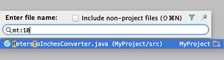

| To open any class or file in the editor at the desired line, press &shortcut:GotoFile;
(Go To | File...),
start typing the name, and choose one from the suggestion list. Then type colon and a line number.
The selected file will open with the caret at the specified line.
 |